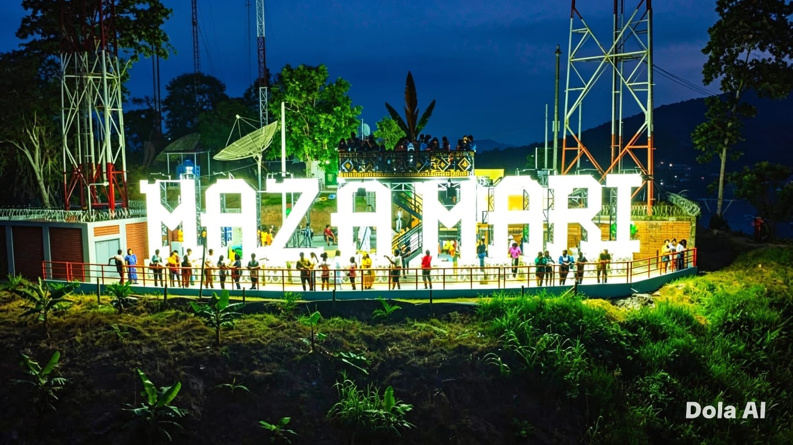
Mirador de Mazamari
Naturaleza, aventura y cultura viva en un solo lugar.
Click para más info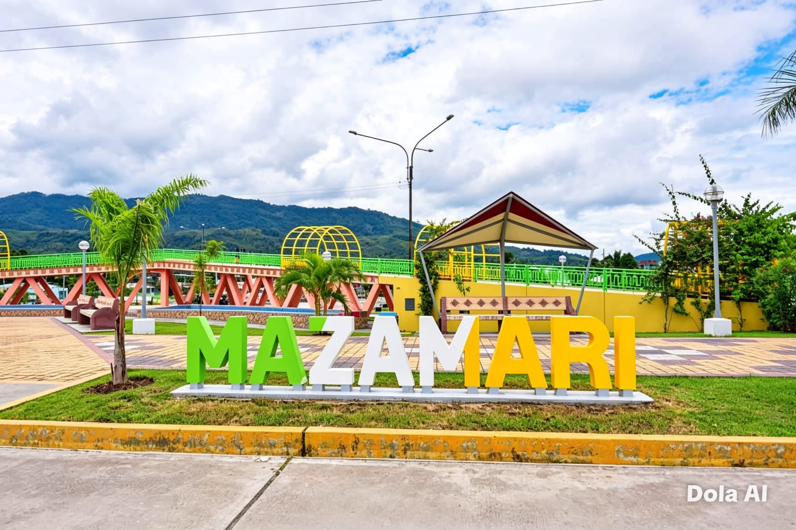
Descubre los destinos más impresionantes de Mazamari y sus alrededores

Naturaleza, aventura y cultura viva en un solo lugar.
Click para más info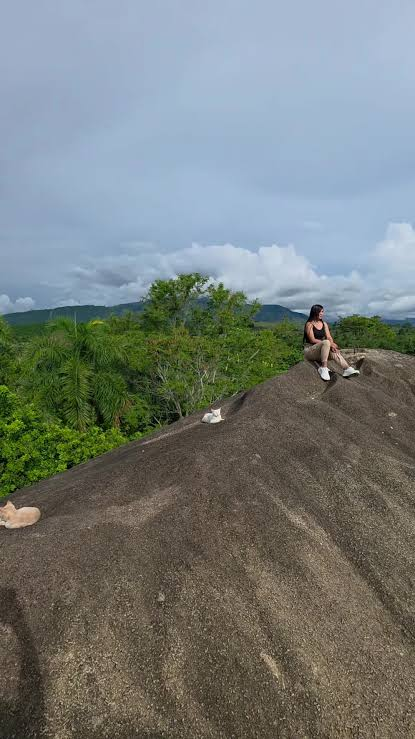
Puerta de la Amazonía peruana con vistas inolvidables.
Click para más info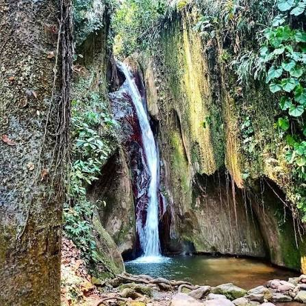
Puerta de la Amazonía peruana con vistas inolvidables.
Click para más info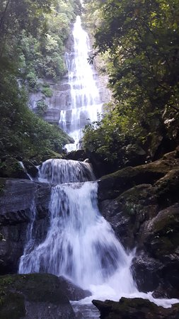
Arquitectura y naturaleza alemana en la selva.
Click para más info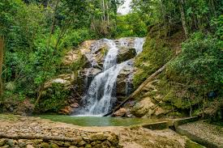
Puerta de la Amazonía peruana con vistas inolvidables.
Click para más info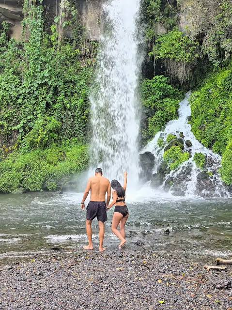
Puerta de la Amazonía peruana con vistas inolvidables.
Click para más info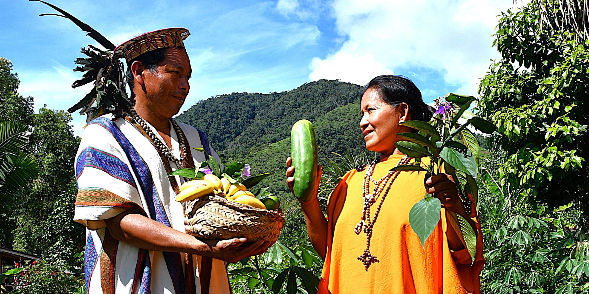
Puerta de la Amazonía peruana con vistas inolvidables.
Click para más info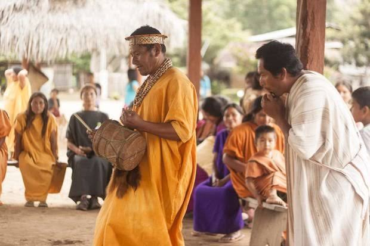
Historia y tradición en el corazón de la selva.
Click para más infoLa cultura de Mazamari (Junín) es una rica fusión entre la herencia ancestral Asháninka, las costumbres coloniales y la tradición agrícola amazónica. Se caracteriza por sus vibrantes comunidades nativas, su deliciosa gastronomía y sus grandes celebraciones tradicionales.
Herencia Asháninka: El distrito alberga numerosas comunidades nativas (como Boca Capirushari o Cañete). Su cultura se mantiene viva a través de su artesanía con semillas y fibras naturales, la vestimenta tradicional (como la cushma) y desfiles de moda étnica.
Festividades Principales: El evento más destacado es la Fiesta de San Juan cada 24 de junio, donde se realizan concursos de danzas, ferias agroindustriales y paracaidismo.
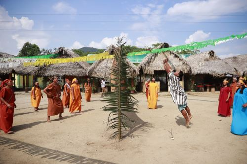
Los sabores auténticos de la Selva Central
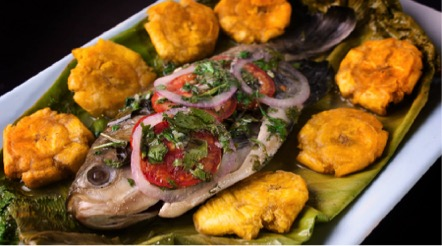
Picante y jugoso, el sabor del río con ají charapita.
Ver lugares y opiniones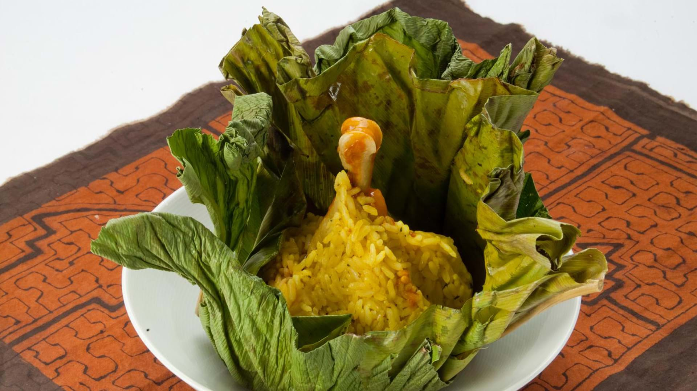
Tradición envuelta en hojas de bijao, alma de San Juan.
Ver lugares y opiniones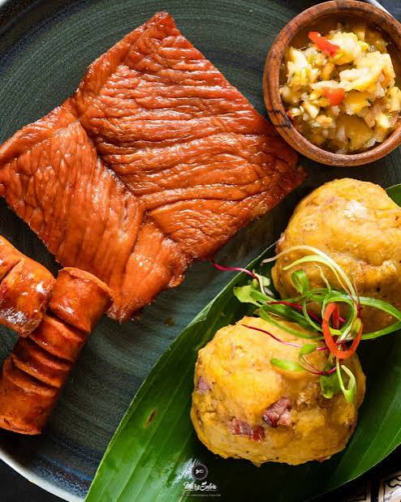
El desayuno amazónico más querido de la región.
Ver lugares y opinionesLleva un pedazo de la Amazonía a casa

S/ 15.00

S/ 18.00
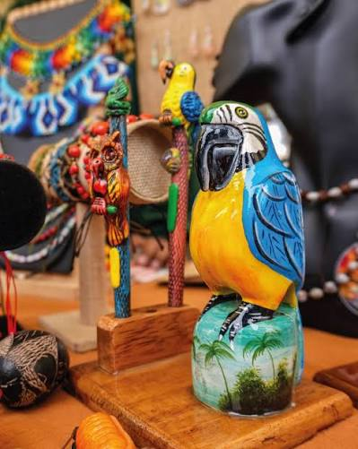
S/ 25.00
¿Preguntas o sugerencias? Escríbenos